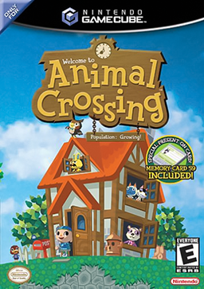
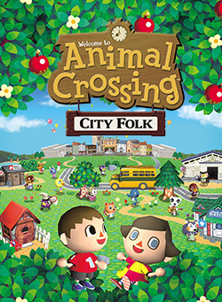

Animal Crossing
In the Animal Crossing games, the player assumes the role of a human character who moves into a rural village populated with anthropomorphic animals and lives there indefinitely. Gameplay is open-ended: players have no defined objectives but are instead encouraged to spend their time in the village performing any number of activities which include collecting items, planting plants, insect catching, fishing, and socializing with the village's residents. Animal Crossing games are played in real-time, utilizing the video game console's internal clock and calendar. Thus, the passage of time in the game world reflects that in reality, as well as the current season and time of day. Some in-game events, such as holidays or the growth of a tree, occur at certain times or require some duration of time to have passed.
Animal Crossing was originally released in Japan for the Nintendo 64 on April 14, 2001. It was enhanced and released on GameCube the same year. This version was localized and released in North America on September 16, 2002. Wild World was released for the Nintendo DS in North America on December 5, 2005. City Folk was released for the Wii in North America on November 16, 2008 and added the ability to go downtown and explore and unlock different shops. New Leaf was released for the Nintendo 3DS in North America on June 9, 2013 and in this game you are the mayor of your little town. In April 2016, Nintendo announced that an Animal Crossing mobile game, later named as Animal Crossing: Pocket Camp, would be released worldwide on November 21, 2017. New Horizons was announced in a Nintendo Direct in September 2018 for the Nintendo Switch. The game was released worldwide on March 20, 2020. New Horizons completely changed how Animal Crossing is played, it added crafting, exploring different island, and so many other really great features.
|  |  |
|  |  |
 |
 |